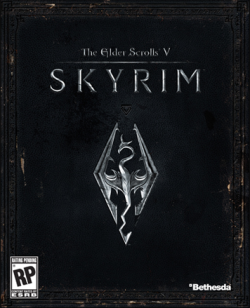
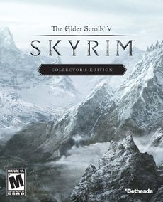
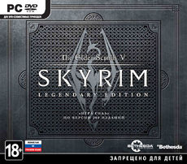

The Elder Scrolls V: Skyrim
| The Elder Scrolls V: Skyrim | |
|---|---|
|  | |
| Издание | |
| Дата выхода | Ноябрь 11, 2011
Декабрь 8, 2011 (Япония) |
| Разработчик(и) | Bethesda Game Studios |
| Издатель | Bethesda Softworks |
| Жанр | Ролевая игра(RPG) |
| Платформа | PS3, Xbox360, PC |
| Игровой движок | Creation Engine |
| Режимы | Одиночная игра |
| Хронология | |
| Дата | 4Э 201 |
The Elder Scrolls V: Skyrim (дословно с англ. — «Древние свитки 5: Скайрим») — мультиплатформенная компьютерная ролевая игра с открытым миром, разработанная студией Bethesda Game Studios и выпущенная компанией Bethesda Softworks. Это пятая часть в серии The Elder Scrolls. Игра была выпущена 11 ноября 2011 года для Windows, Playstation 3 и Xbox 360. Для игры были выпущены три загружаемых дополнения под названиями Dawnguard , Hearthfire и Dragonborn , позже объединённых в издании The Elder Scrolls V: Skyrim — Legendary Edition . Осенью 2016 года было выпущено переиздание для Windows, Playstation 4 и Xbox One, включающее в себя те же дополнения, обновленную графику и поддержку пользовательских модификаций
Подобно предыдущим играм серии, Skyrim предоставляет игроку возможность свободно путешествовать по обширному игровому миру, исследуя его и самостоятельно находя новые места и задания. Действие Skyrim происходит в вымышленной провинции Скайрим на материке Тамриэль, спустя двести лет после событий предыдущей игры серии, The Elder Scrolls IV: Oblivion. Основная сюжетная линия игры связана с появлением в Скайриме могущественного дракона Алдуина; на главного героя, «Драконорождённого», возложена задача остановить возвращение драконов и сразить Алдуина.
Разработка
В 2006 году ZeniMax Media, владелец Bethesda Softworks, зарегистрировала торговую марку «Skyrim».
На «QuakeCon 2009» Тодд Говард из Bethesda Softworks сообщил, что у студии «в данный момент нет планов по созданию TES V». Однако, впоследствии, другой сотрудник Bethesda опроверг эти слова и сообщил, что «серия непременно будет продолжена», но не уточнил временные рамки.
На выставке «QuakeCon 2010» исполнительный продюсер Bethesda Game Studios Тодд Говард сообщил, что в компании разрабатывается ещё один новый проект — итого на данный момент известно о двух, оба не анонсированы. По его словам, уже была завершена работа над дизайном второго проекта. Игра делается на сильно переработанном движке «TES IV: Oblivion/Fallout 3». Как говорит Говард: «Fallout 3 в техническом плане был куда более совершенным, чем Oblivion, а новая модификация будет ещё более серьёзным шагом вперёд. Движок работает на существующих платформах, возможностями которых мы вполне довольны. Но когда вы запустите эту игру, то почувствуете, будто играете на консоли следующего поколения». Особо следует отметить одну из деталей заявления Говарда: в новых играх компании не будет подвергавшегося широкой критике со стороны сообщества ограничения на уровень развития персонажа.
В ноябре 2010, по утверждению «Eurogamer Denmark», стало известно, что Bethesda Game Studios вовсю занята работой над пятой игрой серии The Elder Scrolls — прямым продолжением Oblivion. По словам журналиста датского издания, источник не только подтвердил, что игра находится в разработке, но и коротко упомянул о её содержании. В частности, прозвучали слова Dragon Lord и The Blades. Студия в ближайшие недели планирует начать запись актёров. Тот же источник, располагающий по свидетельству журналиста официальным диздоком, сообщил, что игра будет хронологическим сиквелом Oblivion.
В начале декабря 2010 на Spike TV Video Games Awards игра была анонсирована Тоддом Говардом и был показан первый тизер-трейлер. Игра получила подзаголовок «Skyrim» и была озвучена дата выхода — 11 ноября 2011 года. Джереми Соул согласился продолжить сотрудничество с Bethesda Softworks, начав писать саундтрек к игре.
<В первых числах января вышел февральский выпуск американского журнала Game Informer с описанием особенностей игры и скриншотами./p>
4 ноября 2011 года была отправлена в печать PC-версия The Elder Scrolls V: Skyrim. По данным издателя, в течение первой недели со дня продаж игра разошлась тиражом, превысившим семь миллионов копий. В России игра поступила в продажу одновременно с мировым релизом — 11 ноября 2011 года.
17 января 2011 стало известно, что игра будет работать под управлением игрового движка Creation Engine для обработки и вывода изображения, Radiant AI для поведения неигровых персонажей, Havok Behavior для реализации богатой анимации, Radiant Story для генерации второстепенных заданий. Позднее был анонсирован инструмент под названием Creation Kit для модификации данных игры и создания плагинов.
По словам разработчиков, в The Elder Scrolls V: Skyrim не будет использоваться технология Kinect, она потребляет слишком много памяти. Однако, всё же был выпущен патч для Xbox 360, поддерживающий Kinect.
Коллекционное издание
|  |
Коллекционное издание влючает в себя:
- Диск с игрой The Elder Scrolls V: Skyrim;
- Фигурка Алдуина;
- Арт-бук «The Art of Skyrim», содержащий более двухсот страниц с полноцветными концепт-артами, набросками и моделями из игры с комментариями разработчиков;
- DVD «The Making of The Elder Scrolls V: Skyrim», на котором представлены различные «закадровые моменты» и интервью с разработчиками;
- Карта Скайрима;
- Руководство к игре.
Легендарное издание
|  |
- Оригинальная игра The Elder Scrolls V: Skyrim последней версии 1.9;
- Снято ограничение на максимальный уровень;
- В версии для Xbox 360 включает в себя карту Скайрима;
- Все вышедшие официальные дополнения:
- The Elder Scrolls V: Dawnguard
- The Elder Scrolls V: Hearthfire
- The Elder Scrolls V: Dragonborn
Сюжет
Прошло 200 лет после событий The Elder Scrolls IV: Oblivion, настоящее время — 201-й год Четвёртой эры (4Э 201). Верховный король Скайрима был убит и провинция находится в состоянии гражданской войны. Одна сторона хочет, чтобы Скайрим отделился от Империи, а другая — чтобы остался её частью. Этот раскол является последним событием, предсказанным Древними свитками, и приведёт к возвращению драконов под предводительством Алдуина.
В начале сюжетной линии персонаж игрока оказывается одним из заключённых (собственно, как и во всех предыдущих частях), которого везут на казнь за то, что он незаконно пересёк границы Скайрима в военное время. Как только протагонист кладёт свою голову на плаху, дракон Алдуин нападает на поселение. Игрок позже узнает, что он — Довакин, Драконорождённый, чья способность — окончательно убивать и получать знания сражённых драконов посредством поглощения их души. На него возложена обязанность победить драконов, которые начали своё пробуждение в Скайриме. Желая помочь исполнить судьбу, к Довакину присоединяются знаменитые Седобородые и два последних выживших члена Клинков.
Место действия
Карта владений Скайрима. Также показаны провинции, граничащие со Скайримом.
Королевство Скайрим находится на севере континента Тамриэль. Климат субарктический и арктический. Большую часть провинции занимает тундра, переходящая на севере в ледяную пустыню, а на западе — в горный хребет. Фауна представлена волками, лисами, кроликами, саблезубами, медведями, оленями, мамонтами, великанами, троллями, ледяными привидениями, морозными пауками и другими существами. Территория королевства разделена на девять владений (холдов), каждое из которых имеет собственную столицу. Всего в игре пять крупных городов — Солитьюд (столица королевства), Вайтран, Виндхельм, Маркарт, Рифтен и четыре городка поменьше — Винтерхолд, Данстар, Морфал и Фолкрит, а также несколько посёлков: Айварстед, Ривервуд, Камень Шора, Хелген, Картвастен, Рорикстед, Драконий Мост.
Геймплей
Skyrim сохраняет концепцию большого и открытого мира, характерную для серии The Elder Scrolls. Игрок может свободно путешествовать по всей территории провинции Скайрим, включающей в себя обширные пространства диких земель и высоких гор. В городах можно предаваться таким занятиям, как приготовление пищи, фермерство (сбор урожая с полей ферм с последующей продажей владельцам этих хозяйств и/или использованием собранных продуктов в других целях), переплавка руды или кузнечное дело. Также в крупных городах (и не только) можно найти учителей для улучшения разных навыков. При этом разработчики отмечают, что игровой процесс может занять около 300 часов.
Уровень персонажа игрока повышается по мере развития навыков. В игре есть система левелинга — наличие новых вещей в магазинах и подземельях, а также сила и численность чудовищ, попадающихся в игре, зависят от уровня главного героя. Разработчики решили полностью убрать систему классов. В игре присутствуют особые способности, связанные с определёнными навыками персонажа. Способности организованы в разветвлённую систему созвездий навыков, представляя собой отдельные «звёзды» этих созвездий. Каждое повышение уровня позволяет овладеть очередной способностью. Всего в игре 252 способности, которые представлены в виде различных созвездий и рассчитаны на 50 уровней; впрочем, при желании можно развить персонаж и выше пятидесятого уровня, достигнув лимита на 81 уровне, а с патчем 1.9 ограничения по уровню и вовсе снимаются.
HUD-интерфейс возникает на экране только тогда, когда здоровье, запас сил или магия персонажа подвергаются истощению. Компас — единственный элемент интерфейса, который присутствует на экране всё время. Предметы можно сохранять в меню «Избранное», а меню инвентаря (при открытии которого игра ставится на паузу) по своему визуальному стилю напоминает компас. Находясь в режиме инвентаря, каждый игровой предмет можно вращать, приближать и рассматривать со всех сторон.
Оружие можно экипировать как в правую, так и в левую руку, что позволяет использовать стиль боя с оружием в обеих руках. Также можно экипировать в одну из рук заклинание, а в другую оружие. Специальное меню позволяет быстро переключаться между различными типами оружия и доспехов. Щитом можно атаковать, а на то, чтобы блокировать им удар, требуется определённое время. Каждый из типов оружия (одноручное, двуручное, лук) имеет своё особое преимущество и назначение. При стрельбе из лука требуется больше времени на то, чтобы натянуть тетиву, чем это было в предыдущих играх серии The Elder Scrolls, однако и выстрелы при этом наносят противнику больший урон. По этой причине стрелы стоят весьма дорого, но не считаются редкостью и встречаются повсеместно. Игрок, чей персонаж вооружён луком, может использовать его для защиты в ближнем бою точно так же, как может использовать для этой цели двуручное оружие или щит (хотя щит в данной ситуации наиболее эффективен).
Различные типы заклинаний имеют различные качества — заклинание холода замедляет и при этом истощает запас сил, в то время как заклинание огня наносит длительный урон на всём протяжении горения и даже может зажечь окружающие объекты, а заклинание электричества лишает противника магии. Заклинания можно применять сразу с двух рук, усиливая эффект (при соответствующих способностях).
Игрок может заставить персонаж бежать быстрее ценой расхода запаса сил, но прыжки его не тратят. Также в Skyrim отсутствуют навыки атлетики и акробатики, но есть режим скрытного передвижения. Кинжалы при атаке крадучись действуют особенно эффективно, причиняя огромный ущерб. Подкрадываться же к животным практически бесполезно, они замечают приближение на довольно большом расстоянии.
Особенности
- В каждую руку персонажа можно экипировать оружие или заклинание, сражаясь двумя одноручными клинками или заклинаниями, а также одновременно использовать оружие и заклинание. Это относится и к посохам, так как они теперь используются с одной руки.
- Есть возможность использовать несколько стилей боя. Из вооружения доступны мечи (одноручные и двуручные), щиты, булавы, топоры, боевые молоты и секиры. Ранняя специализация на любимом типе оружия позволит быстрее освоить его. Превосходство во владении оружием можно усилить с помощью способностей. Способности меча увеличат шанс нанесения критического удара, топора — вызвать у врага кровотечение, а булавы начнут пробивать броню врага, добавляя мощь ударам.
- Использование лука стало немного сложнее и интереснее, так как его физика смещена в сторону реалистичности.
- В игре пять школ магии. Школа «Мистицизм» расформирована, часть её заклинаний распределена по другим школам.
- Упразднены классы персонажа, теперь влияние навыков на общий уровень персонажа зависит только от их развития. После достижения персонажем очередного уровня игрок получает одно очко способностей.
- Появились новые возможности, например, приготовление пищи и рубка дров.
- Изменено взаимодействие с неигровыми персонажами. Теперь они во время диалогов с персонажем игрока могут заниматься своими делами, не будет масштабирования во время диалога. Система искусственного интеллекта Radiant Story при выдаче квестов будет учитывать предыдущие действия игрока.
- Убив дракона, главный герой поглощает его душу, что позволяет активировать одно из слов силы в криках — самых мощных заклинаниях в Скайриме. Для активации одного слова (крик состоит из трёх слов силы) нужна одна душа дракона.
- В игре вновь появилась сюжетная линия Тёмного Братства, в которой больше ловушек и головоломок. При этом игрок может решить для себя, будет ли «Семья» существовать дальше или последний оплот во всём Тамриэле будет уничтожен.
- Любой предмет в инвентаре можно вращать, в том числе и книги, которые теперь представлены в виде 3D-моделей.
- Как и в The Elder Scrolls IV: Oblivion, в игре представлена система Fast Travel — возможность быстрого перемещения в ранее посещённые локации. Однако, между городами курсируют извозчики на специальных экипажах (как это было в The Elder Scrolls III: Morrowind). Также система Fast Travel недоступна, если персонаж перегружен, в прыжке или если рядом находятся враги.
- Имеется возможность сменить экипировку непосредственно в процессе битвы.
- Наносимый в битве урон не зависит от того, на какую часть тела пришёлся удар (кроме щитов или оружия, которыми противник поставил блок. При удачном блокировании урон немного снижается, но всё же остаётся).
- Когда персонаж двигается задом наперёд, то его бег становится значительно замедлен. Также бег менее эффективен, если бежать с оружием в руках.
- Количество навыков игрока — 18. The Elder Scrolls V: Dawnguard добавляет две новых ветки навыков, которые, однако, невозможно развивать одновременно и в процессе применения других навыков.
- Добыча руды и навык «Кузнечное дело» — позволит самостоятельно создать большинство видов оружия и брони.
- Неигровые персонажи взаимодействуют с окружением, к примеру, работая на фермах, мельницах, шахтах и лагерях лесорубов. Также неигровые персонажи могут попросить персонажа игрока о тренировке или вызвать его на дуэль; подобные случайные встречи были вдохновлены прежней игрой Bethesda — Fallout 3
- Если в The Elder Scrolls IV: Oblivion ландшафт создавался главным образом с помощью программы-генератора, то в The Elder Scrolls V: Skyrim, по словам разработчиков, все элементы ландшафта размещены вручную: «каждое деревце, каждый камушек, каждая чашка…». В The Elder Scrolls IV: Oblivion над созданием подземелий работал один человек, в The Elder Scrolls V: Skyrim этим занималась группа из восьми дизайнеров, что заметно прибавило локациям колорита.
- При создании внешности для своего персонажа игрок может выбрать для него бороду, шрамы и так далее.
- В игре предусмотрена возможность заключить брак, а если у персонажа игрока есть собственный дом, то его вторая половина будет жить с ним. Браки разрешены вне зависимости от расы будущих супругов, кроме каджитов. Однополые браки также разрешены.
- После патча 1.9 снято ограничение на максимальный уровень.
- Зелья можно принимать в неограниченном количестве.
- В игре присутствует эффект течений в реках, который добавляет реалистичности во время их пересечения.
Болезни
Вместо трёх доступных болезней в Morrowind и одной в The Elder Scrolls IV: Oblivion, в Skyrim имеется две болезни, приносящие пользу и несколько вредящих персонажу.
- Вампиризм — единственная болезнь, которая была в последних трёх частях The Elder Scrolls, принцип такой же, как и раньше. Заражение происходит при битве с вампиром или с помощью какого-либо задания. Вампиризм проявляется после сна, через несколько дней после заражения. Чем меньше вампир пьёт кровь (у спящих людей), тем сильнее проявляется его вампиризм. Помогает избежать заражения вовсе — ожерелье 100 % сопротивления болезням или предварительное заражение ликантропией; на ранних стадиях излечиться помогает зелье исцеления болезней.
- Ликантропия — болезнь, пришедшая из The Elder Scrolls II: Daggerfall, позволяет заболевшему принимать форму зверя один раз в сутки (с помощью кольца Хирсина в Скайриме можно принимать форму зверя несколько раз в сутки). Оборотень очень силён, развивает огромную скорость, использует рёв, отпугивающий врагов, раскидывает врагов в стороны и пожирает трупы для восстановления здоровья (по-другому оборотень здоровье не восстанавливает). Режим оборотня длится немногим более игрового часа. Также ликантропия, как и вампиризм, даёт 100 % сопротивление другим болезням.
- Каннибализм — не совсем болезнь, а скорее способность; после убийства жертвы можно съесть труп, тем самым восстанавливая здоровье, а также повышая его максимальное значение (приобретается посредством обнаружения и экипировки даэдрического артефакта — Кольца Намиры).
Если персонаж игрока заболел, окружающие будут говорить фразы, относящиеся к болезни — например, если протагонист — вампир, окружающие будут намекать на белый тон кожи, если каннибал — «Что ты ел? У тебя изо рта воняет, как из помойки», а если оборотень — стражники могут сказать: «Фуу, воняешь как мокрая собака!» или «Меня твоя волчья ухмылка как то… напрягает», или, что они слышали странный вой, а также то, что у персонажа игрока торчит мех из ушей.
Болезни можно вылечить в храмах или у алтарей божеств, получив благословение того или иного божества, либо с помощью соответствующих зелий.
Озвучивание
Русская локализация
Оригинальная версия
- Арнгейра озвучил канадский актёр Кристофер Пламмер;
- Ульфрика озвучил Владимир Кулич;
- Дельфину озвучила Джоан Аллен;
- Шеогорату и императору Титу Миду 2 свой голос подарил актёр Вес Джонсон.
- Эйлу Охотницу и легата Рикке озвучивает актриса Клаудия Кристиан.